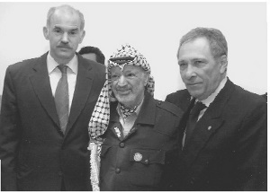
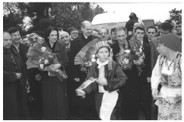

a) Türklerle Yunanlılar
Türk-Yunan yakınlaşmasının ‘depremler sonrası’ ek bir ivme kazandığı doğrudur da, bu yakınlaşmanın depremlerin ardından hele depremler sayesinde gerçekleştiği yanlıştır. Ortak açıklamanın New York’ta yapıldığı 3 Temmuz 1999’un hemen ertesinde, iki dışişleri arasında yoğun temaslar başladı. İlk aşamada, biri terör konusunda olmak üzere beş ‘çalışma grubu’ kurularak, Ankara ve Atina’da toplantılar gerçekleştirildi. Temmuz ayı tamamlanırken, hayli mesafe alınmıştı. Görüşmelere katılan arkadaşlarımız olumlu gözlemler naklediyordu. Yıl sonunda birçok anlaşmanın imzalanır konuma geleceği düşüncesi hâkimdi. Telefonla görüştüğüm Papandreu da, aynı olumlu izlenimleri nakletmekteydi.
Deprem felaketi Türkiye’de yaşandığında, Türk-Yunan ilişkilerindeki düzelme, planlı ve programlı şekilde zaten başlamıştı. Deprem, yakınlaşmayı hızlandıran bir etken oldu. Yunanistan gerçekten bir komşuya, bir dosta yaraşır yaklaşım sergiledi. Papandreu, beni hemen arayarak, Yunan hükümetinin ve halkının üzüntülerini belirtti, neye ihtiyacımız varsa, karşılamaya hazır olduklarını söyledi. Yunanistan’dan kurtarma ekipleri, teknik yardım gönderildi, ihtiyaç varsa, yangın söndürme uçaklarının yola çıkabileceği duyuruldu. Bu dönemde asıl dikkati çeken, Yunan halkının içten yaklaşımı, acımızı gerçekten paylaşmasıydı. Ege’nin öteki yakasından, sivil toplum örgütlerinden, sanatçılardan, her gün dostluk mesajları, okul çocuklarının kendi aralarında topladıkları yardımlar gelmekteydi, dayanışma örnekleri birbirini izlemekteydi. Türkiye’deki depremzedelere katkı için Türk ve Yunan sanatçıları Atina’da, başka Yunan kentlerinde, Yunan ve Türk bayrakları önünde konserler düzenlemekteydi. En güzel sözleri gene Papandreu söyledi: ‘Türk ve Yunan halkları birbirine karşı sanıldığı gibi düşman değildi; derinlerde yatan sevgilerini, bu acı olay su üzerine çıkarmaktaydı...’

İsmail Cem ve Papandreu, Filistin ile İsrail arasında barış başlatma teşebbüsü çerçevesinde görüştükleri Yaser Arafat’la birlikte.
Gerçekten, iki toplumun özelliklerini, algılamalarını ben de düşünmüşümdür. Uzun süre, aynı imparatorluğun tebaası olarak yaşayan bu insanlar, gene uzun süre, barış içinde, benzerlerinin diğer Avrupa coğrafyasında olduğundan daha güvenli, varlıklı ve adaletli bir ortamda bir arada olmuşlardır. Osmanlı düzeninin hem merkeziyetçi, hem de âdemimerkeziyetçi olan kurallarında, Yunanlı, çoğu düzeyde kendi yöneticilerine muhatap olarak ve genelde hayatından memnun olarak yaşamıştır. Daha sonra, tarihte milliyetçilik sayfaları açılırken, Yunan isyanları sahneye çıkmış, vuruşmalar, hattâ savaşlar yaşanmıştır. Bu ortamda, Yunanistan’daki Müslümanlar, kıyama uğratılmış, facialar birbirini izlemiştir. (Amerikalı tarihçi Stanford Shaw’un bu konudaki çalışmaları ve aktardığı belgeler ilginçtir.) Uzun, ortak geçmişinin kısa bir son bölümünde bile olsa, bunları yaşamış insanların birbirine karşı iyi duygular beslemeyeceği açıktır. Yunanistan, aynı zamanda kendi ‘ulusal kimliğini’ de geliştirmek için, ‘tarihsel işgalciye’ karşı öfkesini ve tepkisini abartarak canlı tutmuştur. Yunanistan’ın, Batı Avrupalı büyüklerin gölgesinde Anadolu’yu istila girişimleri, sonu kendileri adına felaketle biten bu maceraları, iki millet arasındaki güvensizliği, hattâ sevgisizliği doruk noktalara çıkarmıştır. Atatürk ve Venizelos’un devlet adamlıkları sayesinde düşmanlık dönemi sona erdirilmişse de, özellikle Kıbrıs’ta odaklaşan karşıtlıklar, ilişkilerin dostluğa dönüşmesini her dönem engellemiştir. 1930’lar sonrasındaki ilk ciddi ve kalıcı olabilecek yakınlaşma adımı, Papandreu ile birlikte tarafımızdan gerçekleştirilmiştir. Özetle, Türk-Yunan dostluğu, kolay iş değildir...
Almanlarla, Fransızların tarih boyunca birbirleriyle karşıtlıklarının, Alman insanıyla, Fransız insanının, birbirine hiç benzemeyişinden kaynaklandığı belirtilir. Hattâ, birey olarak, sosyolojik ve ulusal özellikleri olarak, birbirinin ‘antitezi’ diye nitelenmeleri de mümkündür. Buna karşılık, Türk ve Yunan insanının birbiriyle olan meselesi, derin farklılıklarından değil, tam tersine, birbirine fazla benzemelerinden kaynaklanmış gibidir. Gerçekten, Ege’ye özgü davranış biçimleri, iki millet tarafından ortaklaşa paylaşılmıştır. Bu ortak özelliklerin ilişkiler açısından olumlu denebilecek sonuçları bulunduğu gibi, olumsuzluklar da getirdiği açıktır. Yunan basınını, Yunan siyasal hayatını incelediğimde, hep bu benzerlikleri düşünmüşümdür. Her ikisi de, her an telaşın ve heyecanın, bazen kendine güvensizliğin şahikasına çıkabilen... Spekülasyona, sansasyona fevkâlade açık duran... Gerçekdışı haberleri yayınlamanın ya da onlara inanmanı büyüsüne kendini kaptırabilen...
Benzeşmenin olumlu bir örneğine de değinerek bu kısa değerlendirmeyi bitireyim: Türk ve Yunanlı, kendi toprakları dışındaki bir başka ortamda, bir başka ülkede bulunduklarında, en rahat anlaştıkları, arkadaş oldukları yabancı, ya Yunanlı, ya da Türk olmaktadır... Bir başka ülkede öğrenim gören Türk ve Yunanlı öğrenciler olsun, Almanya’daki Yunanlı ve Türk sendikacılar, Birleşmiş Milletler’de, başka ülkelerde görevli Türk ve Yunanlı diplomatlar olsun, bu özellik dikkat çekmektedir. Birey olarak, insan olarak da Yunanlıları biz kendimize yakın hissederiz. Bize ‘sıcak’ gelirler; ‘yakın’ gelirler, hattâ bazen onları ‘bizden’ gibi de görürüz. Yabancı bir ülkedeki üniversite öğrenciliğimde, en yakın arkadaşlarım arasında, Yunanlı bir yaşıtım da vardı. Yazarlık, sendikacılık, siyasetçilik dönemlerimde, ortak paydaların çokluğu nedeniyle Yunanlı meslektaşlarımla rahat diyalog kurabildim.
Geriye baktığımda, Türk-Yunan ilişkilerinin gelişmesinde, benim Yunan halkına ilişkin genel düşüncelerimin de payı bulunduğunu zannediyorum. Yunan yönetimlerinin geçmişteki birçok davranışını mazur görebilmem elbette söz konusu olamaz; ne Osmanlı’nın çöküş döneminde Yunanistan’daki Türklere ve Müslümanlara uyguladıkları acımasız şiddet, ne Anadolu’yu işgal hayaliyle bizim insanlarımıza çektirdikleri, ne de Kıbrıslı Türklerin 1974 öncesinde hedef yapıldığı terör olayları. Ama klasik Yunan kültürünün eserlerini, Yunan halkının Nazi işgaline karşı direnişinin öykülerini okumuş, faşist iktidarların, cuntaların Yunan halkına verdiği acıları hissetmiş, paylaşmış, diktatörlere karşı mücadelesinde onu desteklemiş bir yazar ve siyasetçiyim. Ayrıca, halkların birbiriyle düşman olamayacağına, düşman kalamayacağına inananlardanım. Özetle, yukarıda belirttiğim ‘birbiriyle fazlaca benzeşen’ özelliklerimizden, ortak paydalarımızdan, en olumlularını, en güzellerini harekete geçirmek, geliştirmek ve sürdürmek gerekir...
b) Papandreu ‘Faktörü’

Türk, Yunan, Bulgar Dışişleri Bakanlarının Edirne’de buluşması. İsmail Cem, Nadezda Mihailova ve Papandreu ile birlikte.
Papandreu ile birbirimizi anlamamızda, arkadaş olabilmemizde, en önemlisi, birbirimize güvenmemizde, sanırım benzeşen özelliklerimizin de etkisi vardır. Dış siyasette, dışişleri bakanının kişiliği, dışişleri bakanlarının birbiriyle bireysel ilişkisi, kuşkusuz tek başına belirleyici değildir. Ama önemli bir etkendir: Eğer karşınızdakine güven telkin edebilmişseniz, sizin doğruluğunuza, karakterinize, sözlerinize güvenilmekteyse, bu, iyi ilişkilere yol açan ya da onları geliştiren başlıca zemindir. Hele bu güvenin yanı sıra, kişisel birikiminizle, bilginizle, mantığınızla karşınızdakilerin saygısını kazanmışsanız, o zaman, dışişleri bakanının ‘kişiliği’, daha da önem taşır: Papandreu’da, bu özelliklerin hepsi hem de fazlasıyla mevcuttur. Dolayısıyla, Türk-Yunan ilişkilerinin iyileşmesinde, Papandreu, çok önemli bir etken olmuştur. Doğrusu, sizi kandırmaya kalkışmayan, sözüne ve kişiliğine güvenebildiğiniz bir muhatabın varlığı, Türk-Yunan ilişkileri gibi son derece hassas ve tuzaklarla, risklerle dolu bir konuda çok önemli olmuştur.
Türkiye bağlamında, Yunan siyasetçileri iki farklı sınıf oluşturur: İlki, Yunanistan’ın menfaatini ‘Türkiye’yle karşıtlıkta’, ikincisi, ‘Türkiye’yle yakınlaşmakta’ görenler. Pangalos, ilk grubun, Papandreu, ikincinin simgesi sayılabilir. Burada dikkatten kaçmaması gereken, Papandreu’nun da, doğal olarak, Yunanistan’ın menfaati için siyaset yaptığıdır. Ne var ki ülkesinin menfaatini Türkiye ile yakınlaşmakta gördüğünden, Başbakanı Simitis’den de destek bulduğundan, belirlediği olumlu ve yapıcı siyaseti uygulayabilmiştir.
Papandreu ile bireysel dostluğumuz, her ikimizin de ülkelerimizin menfaatini güttüğümüz gerçeğini tabii ki değiştirmedi. Ancak bunu, birbirimizi yanıltmadan, inanmadığımızı konuşmadan, birbirimizin hassasiyetini dikkatte tutarak ve birbirimize yardımcı olarak gerçekleştirdik. Papandreu’dan yaşça büyük olmam nedeniyle ve belki yanılıyorum ama, kendimi daha deneyimli varsaydığımdan, onu Yunanistan bağlamında kendimce uyardığım da olmadı değil: ‘Aman, dikkat et, bu söylediğini sizin basın istismar eder, muhalefet sana karşı kullanır’; ya da, ‘... Bu kadar hızlı gitmeyelim, sizin kamuoyu bizimkinden daha duyarlı’ gibi...
Papandreu ile yakınlığımızın önemli bir etkeni, benzer dünya görüşlerimizin, siyaset çizgimizin ve kişiliklerimizin olmasıydı. Papandreu, Yunan sosyalist hareketinde öncülük eden köklü bir siyaset ailesinden gelmekteydi. Hem büyükbabası, hem de babası, başbakanlık yapmıştı; acılar yaşamış, sürgünler görmüştü. Baba Papandreu, pasok’un (Sosyalist Parti) kurucusuydu. Yorgo Papandreu, ciddi bir sosyalist –eşanlamıyla sosyal demokrat– kişilikti. Partisinin daha özgürlükçü, dengeli ve çağdaş kanadında yer almaktaydı. Dünyayı yorumlayışında, solu anlayışında ve kendi işlevini tanımlayışında, benim rahatlıkla paylaştığım düşüncelere sahipti. Benzer hassasiyetleri hem siyasetin genelinde hem de insanlığa, dünyaya, çevremize bakışımızda paylaşıyor olmamız, her ikimizin de kararlı ama saygılı bir üslûp kullanmamız, ilişkilerin gelişimini kolaylaştırmıştı.
1999’un yaz ve sonbahar aylarında iki bakanlığın ortak çalışması hızla gelişiyordu. Birçok konuda anlaşmaya varılmış, metinler imzaya hazır duruma getirilmişti. Tabii, terörle mücadele anlaşmasının hazırlanması en fazla zaman alan metindi. Yunan tarafı, Papandreu’nun gayretine rağmen bu konudaki çekingenliğini üzerinden atamamıştı. Özellikle de, Papandreu’nun bakanlıkta devraldığı bürokrasisi, Pangalos’un izlerinden kolay sıyrılamıyordu. Yunan kamuoyundaki ve siyasetindeki bir kesimin, bu anlaşmayı bir çeşit ‘suçluluğun ikrarı’ şeklinde görmesi, müzakereleri zorlaştırmaktaydı. Buna rağmen, ‘terörle mücadele’, ilk imzalanan anlaşmalara yetiştirilemese de, ikinci aşamadakiler arasında yer alacaktı.
Anlaşmaların, Papandreu ile karşılıklı yapacağımız ziyaretlerde imzalanmasını öngörmüştük. Ziyaret deyip geçmemek lazım, 25 yıl aradan sonra ilk kez bir Yunan Dışişleri Bakanı resmi ikili ziyaret için Türkiye’ye gelmekteydi; 30 yıl aradan sonra gene ilk kez, bir Türk Dışişleri Bakanı resmi ikili görüşme için Atina’ya gidecekti.
İlk olarak, Papandreu, eşi Ada ile birlikte Türkiye’ye geldi. Doğrusu, bu ‘ilkin’ en iyi şekilde gerçekleşmesi için bütün hazırlıkları özenle tamamlamıştık. Eşim Elçin’le beraber, ayrıntılı bir ‘İstanbul programı’ oluşturduk. Türkiye dendiğinde, tarihin, kültürün, İstanbul’un öncelikli bir yeri vardır. Topkapı’sız, Sultanahmet’siz, Aya Sofya’sız bir Türkiye olabilir mi?.. Hattâ, eşimin haklı ısrarıyla, bunlara Dolmabahçe Sarayı’nı da ekledik. Elçin’e göre, Türkiye’nin gerçekte ‘ne olduğunu’, Türkiye’nin büyüklüğünü ve güzelliğini, bir yabancı Dolmabahçe Sarayı’nda sezebilir, daha iyi anlayabilir, değerlendirmesini daha doğru yapabilir. Sanırım, sadece bir yabancının değil, kendi insanımızın da Dolmabahçe Sarayı’nı tanıması, kendi memleketini daha doğru anlamasına, geçmişi ve geleceğiyle Türkiye’yi bütünlüğü içinde algılamasına yardımcı olur.
Papandreu ile birlikte, İstanbul’da halkın içine de karıştık. Hemen her yerde kendisine gösterilen ilgi ve sevgi onu çok etkiledi. Yeniköy’deki bir sahil kahvehanesinde, gençler etrafını sardı. Misafirim, ‘bire bir’ insan ilişkilerini hem seviyor, hem de etkili oluyordu. Kendisine bıraksak, belki tüm resmi programları unutup, insanlarla sohbeti tercih ederdi. Kahvehanedeki misafiri duyan Yeniköylü Rum vatandaşlar da yanımıza geldi, Papandreu onlara da uzun uzun Rumca hal hatır sordu.
Ankara’daki resmi görüşmeler, açıklamalar, basın toplantıları da, önceden planlandığı şekliyle, eksiksiz ve kusursuz tamamlandı.
c) Atina Ziyareti
Papandreu’nun gelişinden iki hafta kadar sonra, Ocak 2000’de Atina’ya gittim. Havaalanında görkemli bir karşılama düzenlemişlerdi. Her şey çok güzeldi de, Papandreu’nun ‘hoş geldin’ konuşmasının bir yerinde, hesapta olmayan ve beni üzen ‘Kıbrıs cümleleri’ karşıma çıkıverdi. Malûm, ‘işgalin’ sona ermesiyle barışın yolu açılacaktı vb. Bunun üzerine ben de planladığım konuşmaya ek yaparak, Kıbrıs’ın işgal edilmediği, faşist bir darbeden kurtarılarak Türklerin hayat hakkına kavuşturulduğu mealinde birkaç cümle kullandım.
Dikkat ettim, yanımda duran evsahibim, daktilo edilmiş bir metni okumaktaydı. Oysa, Papandreu da, benim gibi, konuşmalarını bizzat ve kalemle yazılı notlar halinde hazırlardı. Yani, metinden okumazdı, notlarına bakıp kendiliğinden konuşurdu. Sanırım, Yunan Dışişleri’nin bürokratları hazırlamış, bunları da söylemesinin iç siyaset dengeleri açısından gerektiğine onu ikna etmişti. Her neyse, bu konu hoş olmadı; ancak Papandreu, benimle birlikte olduğu başka ortamlarda aynı şeyi tekrarlamadı.
Atina ziyaretimin havaalanından sonraki bölümleri son derece olumlu geçti. Hem siyaset açısından hem de benim bıraktığım izlenim açısından. Bir şehri ve insanlarını bir ölçüde anlamak, daha doğrusu hissetmek için sokaklarında yürümek gerekir. Güvenlik görevlilerinin hoşnut kalmamasına rağmen, Atina’da bu yöntemi uyguladım, bazen Papandreu’yla, bazen yalnız olarak. Atina’yı bakan kimliğimle bu ilk ziyaretimde, ‘sokaktaki Yunanlıdan’ gördüğüm ilgi ve yakınlık dikkat çekiciydi. Beni tanıyanlar, el sallıyor, bazıları ‘hoş geldin’ anlamında sözler söylüyordu.
Papandreu ve eşi, bizim onurumuza bir ‘resmi’ akşam yemeği düzenlemişti. Hükümetten dört bakan, Dışişleri’nin en üst düzeyinden birkaç kişi, sanatçılar, Atina’nın önde gelen gazetecileri, işadamları, benim sahneden yahut beyaz perdeden tanıdığım İrene Pappas, Mikis Theodorakis, Maria Faranduri, önemli, büyük ve güzel bir topluluk oluşturmaktaydı. Papandreu, yemek sırasında klasik Batı müziğini mi, yerel müziği mi tercih edeceğimizi önceden eşime ve bana sormuştu. İkimiz de, Atina’daki bir akşam yemeğinin Yunan müziğinin uygun olacağını söylemiştik. Tek bir kişi, hem piyanosu hem de şarkılarıyla akşama katılmaktaydı. Resmi konuşmalardan sonra, resmiyet, yerini Ege insanlarının sıcaklığına ve güzelliğine bıraktı. Hiç hesapta ve programda yokken, pek de âdeti değilken, Theodorakis, masasına getirttiği seyyar mikrofonla, ünlü şarkılarını sıralamaya başladı. Ardından, Faranduri, Zülfü Livaneli’nin türkülerini Yunanca seslendirdi. Gerçekten, her şey çok güzeldi. Bu ‘resmi’ akşam yemeğinin ardından, Papandreu’larla ve eşimle küçük bir tavernaya gittik. Öyle lüksü olmayan, tipik Yunan müziğiyle, orkestrasıyla ve şarkıcılarıyla ünlenmiş bir yerdi. Orada da, ortak bir ilgiyle, hattâ alkışla karşılandık. Bunları tabii ki abartmamak gerekir. Ama Atina’daki hava, ülkelerinin ve milletlerinin menfaatini karşıtlıkta değil, anlaşmakta gören iki siyasetçiyi yüreklendiren olgulardı.
Resmi görüşmeler, önceden planlandığı şekliyle gerekleşti. Üzerinde çalıştığımız anlaşmalardan bir bölümünü daha imzaladık. Ortak basın toplantısında, Türk-Yunan ilişkilerinin objektif, abartısız bir fotoğrafını verdik. Ben, özellikle dikkatli konuştum. Kıbrıs’ın, ikili ilişkilerimizin dışında çözümü aranan bir konu olduğunu, öncelikle Kıbrıs’taki iki milletin arasında görüşülmesi gerektiğini belirttim. Ege sorunlarının, süreç içinde ele alınabileceğini söyledim. İki ülke arasında ciddi görüş ayrılıklarının var olmaya devam ettiğini, ancak, bunların çözümü yolunda birlikte arayışlar olduğunu vurguladım.
2000 yılı başında, Yunanistan, en azından kamuoyunun bir bölümüyle, Türkiye’ye ‘doğru’ bakmaya başlamıştı. Bu, gerçekler dikkate alındığında, önemli bir gelişmeydi. Çünkü Yunan siyasetçisi, basını ve medyası, kilisesi, Türkiye karşıtlığını bir kutsal öğretiymişçesine milletinin zihnine yerleştirmiş, genlerine işlemişti. Yunanlılara, Türkiye karşısında tarihsel ‘mazlum’ oldukları, Türkiye’den ‘alacakları’ bulunduğu, Türkiye’nin, patlamaya her an hazır bir ‘tehdit’ olduğu, hem kendi hâkim zümreleri hem de ilgili yabancı ülkeler tarafından yüz yıldır telkin edilmekteydi. Sampson’un faşist darbesiyle Kıbrıs’ı kendilerine bağladıklarını sandıkları anda, gene Türkiye vaziyet etmiş ve ‘umutlarını’ ellerinden almıştı, vb. Bu şartlanmaların hâlâ güçlü etkisinde olan bir komşuyla ilişkileri düzeltmek kolay değildir. Buna rağmen, yöneticileri tarafından üzerlerinde Demokles’in kılıcı gibi sallandırılmış ‘Türk tehdidi’ masalından, Yunan halkının artık sıkıldığı anlaşılıyordu.
d) Ortadoğu ve Balkanlar
Papandreu ile birlikte gezilerimiz oldu. Belki en önemlisi, 2002 Nisanı’nda, Filistin Devlet Başkanı Arafat’ı ve İsrail Başbakanı Şaron’u ziyaretimizdi. Özellikle Arafat: O sıralarda, İsrail, Filistin topraklarını işgal etmekteydi. Ramallah kentinde, Arafat’ın karargâhı da kuşatma altındaydı. İsrail, özellikle ab ülkelerinden bakanların, temsilcilerin Arafat’ı görmelerine geçit vermiyordu. Fikir benden gelmişti, Papandreu’yla birlikte Arafat’ı ziyaret etmek istediğimi, İsrail Dışişleri Bakanı Simon Peres’e söyledim. Sanırım biraz da Türkiye’nin hatırına, olumlu cevaplandı. Papandreu çok memnun olmuştu. Çünkü, ab’yi temsilen Kudüs’e kadar gelmiş Solana’ya, ab dönem başkanı İspanyol Dışişleri Bakanı Pike’ye, bu imkân tanınmamış, ilk girişimlerinde Arafat’la görüşemeden geri dönmek zorunda bırakılmışlardı. Papandreu, bu imkânı bulan ilk ab bakanı olacaktı. Türkiye açısından da önemli bir gelişme söz konusuydu. Bir defa, Türkiye, bölgedeki etkinliğini, hem İsrail hem Filistin açısından önemini bir kez daha sergilemekteydi. Ayrıca, ab’nin, Türkiye ile birlikte hareket ettiğinde Ortadoğu’da daha etkili ve işlevsel olabileceğini, ab üyesi bütün ülkeler görmekteydi.
Bizim ziyaretimiz, Batılı bakanların kuşatılmış Arafat’la ilk teması olacaktı. Kudüs’ten, iki zırhlı araçla Türk ve Yunan heyetleri yola çıktı. Bir saat kadar sonra, karargâhın önündeydik. Arafat’ın ‘karargâhı’, İsrail tanklarının mermileriyle delik deşik edilmişti. Elektrik yoktu, su zorlukla bulunmaktaydı, Filistin Cumhurbaşkanı, dışarısıyla haberleşemiyordu. Binanın önündeki meydanda İsrail tankları ve askerleri devriye gezmekteydi. İnsan hakları kuruluşlarının bazı gönüllüleri, yeni bir saldırıya uğrayabilecek olan binada ‘canlı kalkan’ olarak kalmaktaydı, birkaçı binanın önündeydi, bizi coşkuyla karşıladılar. İçeri girdiğimizde, karanlıkta yürür gibiydik: Dışarının aydınlığından sonra, ince uzun koridorun cılız mum ışığına alışmak kolay değildi. Arafat, yanındaki kurmaylarıyla bizi bekliyordu. Görüntü olarak çökmüştü ama inadından ve iradesinden bir şey eksilmemişti. ‘... Gördüklerinizi, dünyaya anlatın’ dedi. Bir saate yakın görüştük. Son derece memnun kaldı. Türkiye’ye ve Avrupa Birliği’ne, Yunanistan’a teşekkür etti. Ayrılmamız hüzünlü oldu. Arafat’la sayısız toplantıda birlikte olmuştum. İsrail-Filistin görüşmelerinde Türkiye ‘kolaylaştırıcı’ bir işlevi her iki tarafın onayıyla üstlenmişti. Özellikle 2000 yılı yazında ve sonbaharında, Arafat ve İsrail Dışişleri Bakanı Ben Ami ile birlikte çalışmış, sık sık Arafat’la bir araya gelmiştik. Arafat da, Ben Ami de, o dönemdeki çalışmalarına Türkiye’nin ciddi katkıları olduğunu uluslararası basına açıklamıştı. Arafat, insan olarak sevdiğim bir kişilikti. Karargâhtan ayrılırken, onu bir daha göremeyecekmişim gibi bir his içime geldi. Bugüne kadar göremedim; zaten Arafat hâlâ Filistin’in dışına çıkarılmıyor.
Papandreu’yla birlikte bu ziyareti gerçekleştirmemiz, beklediğim üzere, uluslararası basın ve medyanın yakın ilgisini topladı. Time dergisinden, Le Monde’a, Die Welt’e, cnn’deki ortak mülakatımıza kadar her yerde bu ziyaretten bahsedildi. Benim çok önemsediğim ‘Türkiye’nin İmajı’ olgusuna, önemli bir katkı sağladı.
Balkanlar, Papandreu ile ortak ‘dış’ konularımızın başlıcasıydı. Önde gelen iki Balkan ülkesi olarak, bizim benzeşen yaklaşımlar sergilememiz bölgede olumlu gelişmeleri kolaylaştırdı. İki geleneksel düşmanın şimdi uzlaşma yolunda ilerlemesi, parçalanmış Balkanlar’ın birbiriyle kavgalaşan milletlerine ‘doğru’ bir örnek yarattı. 1997-2002 dönemi, Balkanlar’da gerilimin tırmandığı dönemdi. İstikrarsızlık ve güvensizlik kuraldı. Bosna’da savaş, daha doğrusu katliam, henüz son bulmuştu. Kosova’da ‘etnik temizlik’ felaketi yaşanmış, ardından, Yugoslavya’nın bombalanması ve Miloşeviç rejiminin yıkılması gelmişti. Türkiye’nin girişimiyle başlayan ‘Güneydoğu Avrupa İşbirliği Örgütü’ çalışmalarında, Türkiye ve Yunanistan, hadiseleri tırmandıran değil, tarafları uzlaştıran bir işlev taşıdı. Kosova bunalımında, içsavaş eşiğinde gezinen Makedonya’da, Arnavutluk’un içindeki gerilimde, Yunanistan’la yer yer farklı yaklaşsak da, sonuçta barış ve istikrarın desteği olabildik.
Papandreu ile girişimlerimizin ilginç bir örneği, ‘Üçlü Komşular Forumu’ oldu: Türkiye, Yunanistan, Bulgaristan. Bu, onun fikriydi: Üç komşu ülkenin işbirliğini güçlendirmek, var olan sorunları gidermek amacını taşıyordu. Önemli bölgesel konularda, ekonomik işbirliğinde sürekli danışma kararı aldık ve uyguladık. Bu girişimin ‘sembolik’ başlangıcını, Bulgar Dışişleri Bakanı Nadezda Mihailova ve Papandreu ile birlikte, ‘üç ülkede üç toplantıyı aynı günde gerçekleştirerek’ yaptık. Üçümüz de ülkelerimizin ortak sınır bölgelerine gelerek, sabah Bulgaristan’da, öğleden sonra Edirne’de, akşam Yunanistan’da bir arada olduk. Birbirleriyle iyi ilişkileri ve ticareti geliştirmekte büyük yararı olan bu bölgelerde, halkın olağanüstü sevgisiyle karşılandık. Bu toplantılar döneminde, ilişkiler de, ticaret de önemli ölçüde gelişti. Kısa bir süre sonrasının Yunan genel seçiminde, Papandreu’nun partisi pasok’un Batı Trakya’dan –ve Batı Trakyalı Türklerden– büyük oy almasını, Yunanlı yorumcular, Türk-Yunan yakınlaşmasından kaynaklanmış ekonomik ve siyasal gelişmenin sonucu olarak nitelediler.
Bir başka ortak girişimi, ben başlatmıştım: nato üyeliğine aday Romanya ve Bulgaristan’ın üye olabilmeleri için, abd ve öteki nato ülkelerinde ortak girişimde bulunduk. nato’nun Balkanlı üyelerinin artmasında hem Türkiye’nin hem Yunanistan’ın yararı vardı. O sıralarda, başka adayların kabul edilirken, bizim komşuların reddedileceği düşüncesi ağır basıyordu. ‘Dörtlü’ toplantıların ilkini İstanbul’da, ikincisini Atina’da, Bulgar ve Romen Dışişleri Bakanlarıyla birlikte gerçekleştirdik. Bu girişim, nato üyeliğine kabullerinde önemli bir katkı oldu.
Balkanlar’daki işbirliğimizin yanı sıra, Türkiye ve Yunanistan arasında bölgesel bir rekabetin de bulunduğu açıktır. Buna, barış içinde rekabet, dostane rekabet denebilir ama, her iki ülke, kendi etkinliği korumanın, geliştirmenin siyasetini de izlemiştir. Yunanistan’ın bu alandaki gücü, Avrupa Birliği üyeliğinden ve ekonomik imkânından kaynaklanıyordu. Tüm Balkan ülkelerinin amacı, malûm, ab üyesi olmak. Romanya ve Bulgaristan hayli mesafe alarak üyelik müzakerelerini başlattı. Makedonya’nın, Bosna-Hersek’in, Arnavutluk’un, Yugoslavya’nın hedefi de Avrupa Birliği. Yunanistan, ab üyesi tek Balkan ülkesi olarak, bu alanda çok önemli bir avantaja sahip. Papandreu, Yunanistan’ın bu özelliğini doğrusu ustalıkla kullanmaktaydı. Öteki Balkan ülkelerine ‘ab yolunda ağabeylik yaparak’, onlarla ab arasında köprü oluşturarak, bazı ab kaynaklarının bu ülkelere aktarılmasında yardımcı oldu. Çeşitli işbirliği alanları ve iletişim kanalları yaratarak, ab üyeliğini hayati önemde gören Balkan ülkelerinde Yunan etkinliğini artırdı. Nihayet, maddi imkân: Yunan şirketleri, büyük kaynaklarıyla, kredi imkânlarıyla, Balkanlar’daki özelleştirmelerin bir numaralı alıcısı olabildiler. Yunan devleti, önemli fonlar oluşturup, yardım, kredi gibi araçlarla Balkan ülkelerine aktarabildi. Kaynak üstünlüğü, Yunan tarafına Türkiye karşısında öncelik kazandırdı.
Türkiye’mize gelince: Bizim elimizdeki imkânlar, ‘siyaset’, ‘güvenlik’ ve ‘tarih’ ağırlıklı. nato üyeliği de bir koz ama aynı koz Yunanistan’da da var. Yunanistan’da olmayan, bizim, kocaman bir tarihi Balkanlar’la paylaşmış olmamız. Bir defa, bazen sanılanın aksine, paylaşılan tarihin Bosna’da, Makedonya’da, Kosova’da ve diğerlerinde bırakmış olduğu, genellikle olumluluklar içeriyor. ‘Türkler gelip işgal etti, bizim gelişmemizi önledi’ söylemi, gerçeği anlatamayacak, bugüne yetmeyecek kadar basit. Bazı ülkelerin millî kimlik yaratmak için, millî birlik sağlamak için öncelikle kuruluş aşamasında sıkça kullandığı, ancak etkinliği zannedilenden sınırlı bir söylem. Bundan daha etkili olan, geçmiş yüzyılların paylaşılmış hayat tarzları, olumlu anılar, başarılar. Özellikle Müslüman nüfusun yoğun olduğu ülkelerde, bu geçmiş daha da canlı. Türkiye’nin ikinci kozu, Kosova, Makedonya, Bulgaristan gibi ülkelerde, hattâ Yunanistan’da, kayda değer bir güç oluşturabilen Türk azınlıkların varlığı. Bunlar, elbette yaşamakta oldukları ülkelerin eşit vatandaşı. Ancak, Türk özellikleri her zaman Türkiye yararına bir ağırlık yaratıyor. Yunanistan’ın ise, etnik tartışma alanlarında her zaman sorunu var: Yunanistan’da yaşayan Makedon, Arnavut azınlıklar gibi. Nihayet, Türkiye, diğer Balkan ülkelerinin savunmasında, istikrarın sağlanmasında, çoğunun silahlı kuvvetlerinin eğitiminde hayli etkili. Bosna’daki, Kosova’daki Türk birlikleri, Arnavut ordusunun eğitimi, bu ülkedeki askeri limanın inşası gibi.
Sonuç, Yunanistan’la güç dengesini Balkanlar’da koruyabilmekte olmamızdı. Meselenin, eksiklerimizin farkındaydık, planlı, programlı, bilinçli bir çalışma sürdürüyorduk. Şu sıralarda neler yapıldığını bilemiyorum. Ancak hemen söyleyeyim: Paranın en öne çıktığı, ab’ye üye olmanın en yüce değerden sayıldığı bir çağda yaşamaktayız. Balkan ülkelerindeki özelleştirmeleri hatırlıyorum. Alıcı Türk şirketlerinin öne çıkabilmesi için, tarih, siyaset, güvenlik, ne varsa ilgili ülkenin yöneticilerine hatırlatılırdı. Ancak, bizimkilerin önerdiği fiyatın neredeyse iki katını Yunan şirketleri verdiğinde, tarihin de, siyasetin de, güvenlik kaygılarının da esamesi okunmaz olurdu...